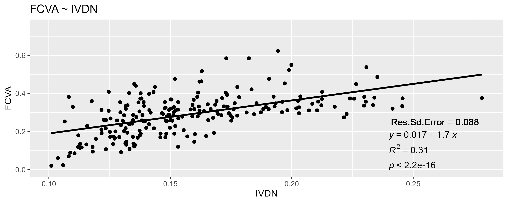
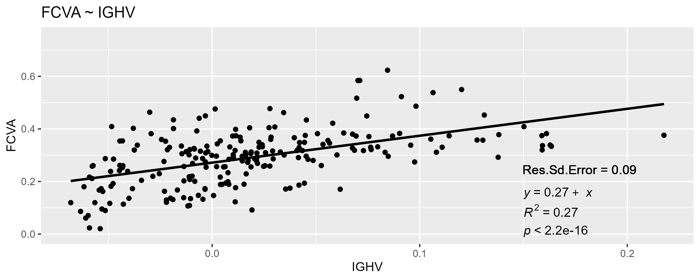
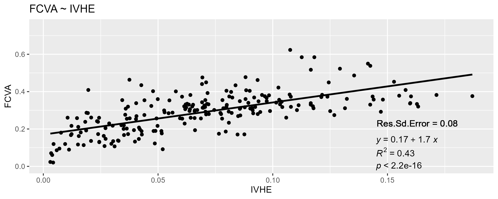
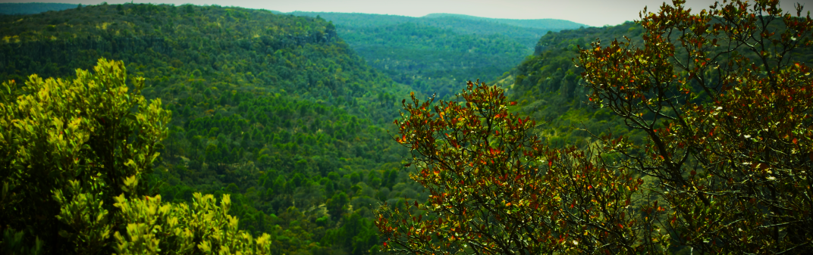

Área Natural Protegida Sierra Fría, Aguascalientes: topografía y vegetación.

Estimación de la Fracción de Cobertura Vegetal con ajuste de copa verde y seca (FCVA)
Mosaico a partir de las imágenes RGB.
Malla con cuadrantes de muestreo dentro de los que se estimó la FCVA.

Características de la imagen Sentinel 2
Tabla 1. Descripción de las bandas del sensor MSI.
| Número de banda | Longitud de onda central (nm) | Ancho de banda (nm) | Resolución espacial (m) |
|---|---|---|---|
| 1 | 442.7 | 20 | 60 |
| 2 | 492.7 | 65 | 10 |
| 3 | 559.8 | 35 | 10 |
| 4 | 664.6 | 30 | 10 |
| 5 | 704.1 | 14 | 20 |
| 6 | 740.5 | 14 | 20 |
| 7 | 782.8 | 19 | 20 |
| 8 | 832.8 | 105 | 10 |
| 8a | 864.7 | 21 | 20 |
| 9 | 945.1 | 19 | 60 |
| 10 | 1,373.5 | 29 | 60 |
| 11 | 1,613.7 | 90 | 20 |
| 12 | 2,202.4 | 174 | 20 |
https://sentinel.esa.int/web/sentinel/missions/sentinel-2
Escena descargada:
D:\Documents\GIS\IMG_SAT\S2A_MSIL1C_2023...\
Pre-procesamiento de imágen Sentinel 2
Como resultado se obtuvo una imagen mejorada, con una reducción notoria de sombras por efecto de la topografía.

1 . 3 . Índices Espectrales ( IE )
Índice Global de Humedad Vegetal (GVMI Global Vegetation Moisture Index)
Índice de Vegetación y Humedad Escasos (BVMI Bare Vegetation & Moisture Index)


Estimación de la FCVA a partir de los IE
  

En el vídeo se observa un paneo sobre la imagen del Componente Principal 1 (PC-1)
extraído de una fotografía RGB registrada por un dron. La imagen nos permite distinguir en tonos de gris diferentes
tipos de cobertura que se presentan en la zona de estudio. Las zonas más oscuras representan zonas de
intenso verdor vegetal mientras que las zonas en color blanco corresponden a suelo desnudo y roca.
1 . 5 . Clasificación de imágenes
Clasificación k-means
1 . 6 . Análisis de regresión logística ordinal
Variables topográficas
Curvas de probabilidad estimadas por el modelo.

En la imagen se observan las probabilidades de ocurrencia de las diferentes clases de vegetación
para diferentes valores de la pendiente, altitud y orientación
del terreno..
Estos resultados pueden ser de utilidad para alimentar modelos de optimización para la
localización y mapeo de sitios aptos para acciones específicas de restauración y conservación.
El siguiente ejemplo muestra un modelo de superficie de respuesta con las variables
slope, aspect y la respuesta del IE.
Gráfica interactiva. Superficie de respuesta donde se observa la
interacción de la pendiente y la orientación sobre la respuesta del IE.
El eje x representa los valores de la pendiente;
el eje y representa los valores de orientación del terreno donde 0 indica la
orientación Norte y 180 la orientación Sur. Se observa que el IE crece
con el aumento de la pendiente y principalmente en terrenos con orientación Norte.
1 . 5 . Clasificación de imágenes
Clasificación k-means
1 . 6 . Análisis de regresión logística ordinal
Curvas de probabilidad estimadas por el modelo.
En la imagen se observan las probabilidades de ocurrencia de las diferentes clases de vegetación para diferentes valores de la pendiente, altitud y orientación del terreno..
Estos resultados pueden ser de utilidad para alimentar modelos de optimización para la localización y mapeo de sitios aptos para acciones específicas de restauración y conservación. El siguiente ejemplo muestra un modelo de superficie de respuesta con las variables slope, aspect y la respuesta del IE.
Gráfica interactiva. Superficie de respuesta donde se observa la interacción de la pendiente y la orientación sobre la respuesta del IE. El eje x representa los valores de la pendiente; el eje y representa los valores de orientación del terreno donde 0 indica la orientación Norte y 180 la orientación Sur. Se observa que el IE crece con el aumento de la pendiente y principalmente en terrenos con orientación Norte.